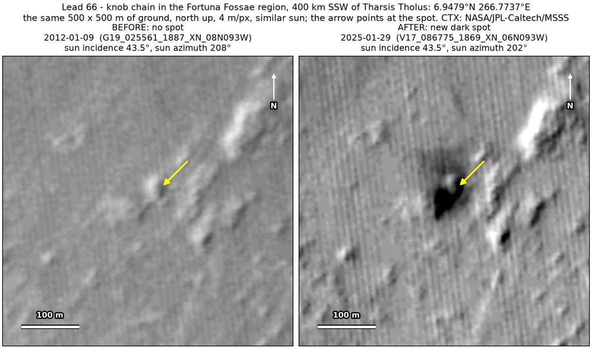
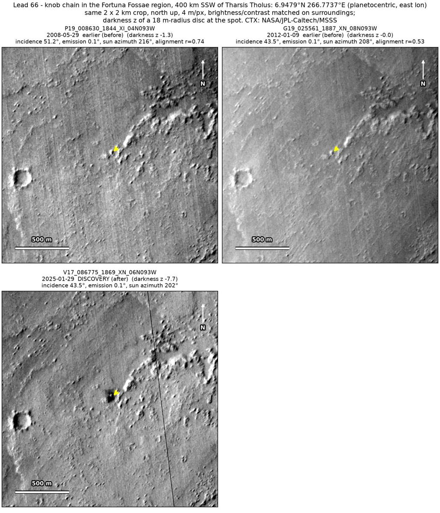
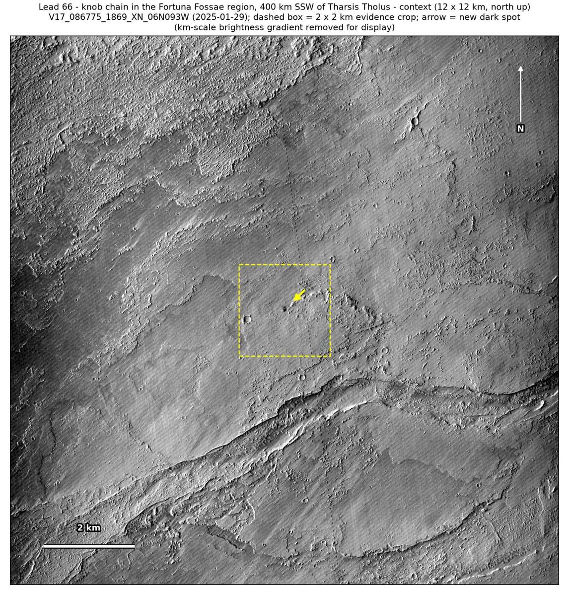

Professor of Mathematics
Paata Ivanisvili
Department of Mathematics, University of California, Irvine

← Possible new impact sites on Mars
Candidate 66: Knob chain in the Fortuna Fossae region, 400 km south-south-west of Tharsis Tholus
Promising · roughly 70%

What changed. A very dark spot about 42 m across, with a faint halo, appeared beside a small knob at the end of a knob chain in the Fortuna Fossae region, between January 2012 and January 2025, in one CTX image so far.
Why it may be a new impact. Two earlier images, from 2008 and January 2012, show the knob but no spot; the 2012 image was taken under the same sun as the January 2025 one. The spot lies on the knob’s sunward (south-west) side, so it is not the knob’s shadow, and a very dark new spot with a faint halo is how the blast zone of a small new crater can look.
- Location
- 6.948° N, 266.774° E (93.226° W)
- Absent
- 29 May 2008 and 9 January 2012
- Present
- 29 January 2025
- Size
- Very dark spot about 42 m across (46 × 62 m), with a faint halo
- Confidence
- Promising candidate; roughly 70% that it is a new impact.
- Caveat
- Only one image shows it so far, and dark material shed off the knob is possible. The knob shadow 210 m to the east-north-east used as a check is only weakly dark, so that check is not conclusive on its own. It lies outside every footprint of the high-resolution HiRISE camera; the nearest ends 54.4 km away. Like every candidate here, it is unconfirmed: see the caveat.

